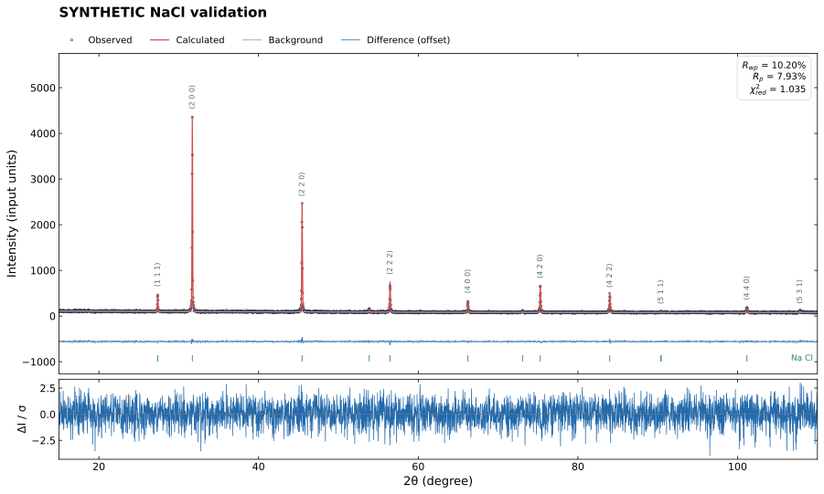
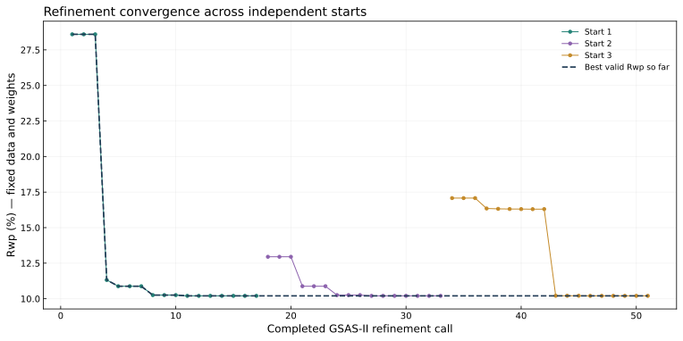

RIETVELD STUDIO · GSAS-II
SYNTHETIC NaCl validation
2026-10-31T18:25:45.298006+00:00 · 3801 observations · 10 refined variables
Rwp10.2%
Rp7.927%
Rexp10.03%
Reduced χ²1.035
Goodness of fit1.017

Weight interpretation: Statistical interpretation is conditional on the declared experimental intensity uncertainties and model.
Optimizer: Convergence criteria met. Rwp and parameter shifts converged
Iteration history

Interpretation: a lower Rwp alone does not establish a correct chemical or structural model. Review residuals, convergence, correlations, phase selection, wavelength, and instrument calibration. Phase fractions are relative to the modeled crystalline phases; amorphous content, oxidation state, dopant-site identity, and Li occupancy are not established by this automated fit.
Diagnostics and assumptions
- No calibrated instrument profile was declared. Absolute lattice parameters retain wavelength/zero/height systematic errors; size/strain quantification is disabled.
- 3 parameter pairs have |correlation| ≥ 0.90; inspect correlations.csv.
- GSAS-II: Note highly correlated parameters:
** :0:V and :0:W (@95.64%)
- Assess radiation, symmetry/stoichiometry, impurities, texture and instrument calibration using the full observed/calculated/difference plot. A small R factor or a converged optimizer does not prove the structural model.
Weighting: supplied standard uncertainties; w=1/sigma²
Full profile including background; only included points, w=1/sigma². chi2_reduced=(Rwp/Rexp)²; GOF=sqrt(chi2_reduced).
Lattice parameters and standard uncertainties
| phase |
parameter |
value |
standard_uncertainty |
unit |
refined |
| Na Cl |
length_a |
5.64015 |
4.31982e-05 |
Å |
True |
| Na Cl |
length_b |
5.64015 |
4.31982e-05 |
Å |
True |
| Na Cl |
length_c |
5.64015 |
4.31982e-05 |
Å |
True |
| Na Cl |
angle_alpha |
90 |
— |
degree |
True |
| Na Cl |
angle_beta |
90 |
— |
degree |
True |
| Na Cl |
angle_gamma |
90 |
— |
degree |
True |
| Na Cl |
volume |
179.421 |
0.00412257 |
ų |
True |
Measurement and model settings
| setting |
value |
| geometry |
Bragg-Brentano |
| goniometer_radius_mm |
200 |
| instrument_calibrated_user_declaration |
False |
| background_type |
chebyschev-1 |
| background_coefficients |
3 |
| actual_fit_min_two_theta_deg |
15 |
| actual_fit_max_two_theta_deg |
110 |
| excluded_ranges_deg |
[] |
| profile_mode |
instrument |
| requested_position_correction |
none |
| peak_match_tolerance_deg |
0.15 |
| weighting |
supplied standard uncertainties; w=1/sigma² |
| GSAS_II_version |
5846 |
Actual fitted instrument parameters
| parameter |
value |
initial_value |
refined |
| Type |
PXC |
PXC |
False |
| Bank |
1 |
1 |
False |
| Lam |
1.54059 |
1.54059 |
False |
| Zero |
0 |
0 |
False |
| Polariz. |
0.5 |
0.5 |
False |
| Azimuth |
0 |
0 |
False |
| U |
-7.15002 |
2 |
True |
| V |
8.06947 |
-1 |
True |
| W |
4.70267 |
5 |
True |
| X |
0.603542 |
0.2 |
True |
| Y |
0.800509 |
0.2 |
True |
| Z |
0 |
0 |
False |
| SH/L |
0.002 |
0.002 |
False |
Phase results
| phase |
space_group |
formula_from_cif |
cell_refined |
volume_change_percent |
density_g_cm3 |
weight_fraction |
weight_fraction_su |
R_F_percent |
R_F2_percent |
weight_fraction_basis |
scale |
size_um |
size_su_um |
microstrain_ppm |
microstrain_su_ppm |
march_dollase |
march_dollase_su |
| Na Cl |
F m -3 m |
Na Cl |
True |
-0.522047 |
2.16356 |
1 |
None |
22.3889 |
32.6919 |
normalized over modeled crystalline phases; amorphous content not determined |
1 |
None |
None |
None |
None |
None |
None |
Atomic model
| phase |
label |
element |
x |
y |
z |
x_su |
y_su |
z_su |
occupancy |
multiplicity |
Uiso_A2 |
Uiso_su_A2 |
Biso_A2 |
ADP_type |
ADP_values |
refinement_flags |
uncertainties |
| Na Cl |
Na1 |
Na |
0 |
0 |
0 |
None |
None |
None |
1 |
4 |
0.012 |
None |
0.947482 |
I |
0.012 |
|
See parameters.csv for refined/dependent GSAS-II variable uncertainties. |
| Na Cl |
Cl1 |
Cl |
0.5 |
0.5 |
0.5 |
None |
None |
None |
1 |
4 |
0.012 |
None |
0.947482 |
I |
0.012 |
|
See parameters.csv for refined/dependent GSAS-II variable uncertainties. |
Refinement stages
| stage |
accepted |
Rwp_percent |
passes |
selected_pass |
n_parameters |
max_shift_over_su |
converged |
message |
| background_scale |
True |
28.596 |
3 |
3 |
4 |
1.31671e-14 |
True |
Rwp and parameter shifts converged |
| cell |
True |
10.8799 |
4 |
2 |
5 |
0.182387 |
True |
Rwp and parameter shifts converged |
| profile_gaussian |
True |
10.2559 |
3 |
3 |
8 |
0.00532661 |
True |
Rwp and parameter shifts converged |
| profile_lorentzian |
True |
10.2016 |
4 |
4 |
10 |
0.03769 |
True |
Rwp and parameter shifts converged |
| final |
True |
10.2016 |
3 |
1 |
10 |
0.0176433 |
True |
Rwp and parameter shifts converged |
Strong parameter correlations
| parameter_1 |
parameter_2 |
correlation |
| :0:V |
:0:W |
-0.95644 |
| :0:X |
:0:Y |
-0.945954 |
| :0:U |
:0:V |
-0.905574 |
Independent starting trials
| name |
cell_scale |
zero_offset_deg |
width_factor |
alignment_score |
trial |
success |
Rwp_percent |
weighted_SSE |
project |
stages_accepted |
selected |
| original |
1 |
0 |
1 |
— |
1 |
True |
10.2016 |
3923.42 |
trials/01_original/refinement.gpx |
5 |
True |
| aligned |
0.9985 |
0 |
1 |
0.464715 |
2 |
True |
10.2016 |
3923.43 |
trials/02_aligned/refinement.gpx |
5 |
False |
| aligned_broader |
0.9985 |
0 |
2.5 |
0.464715 |
3 |
True |
10.2016 |
3923.43 |
trials/03_aligned_broader/refinement.gpx |
5 |
False |
Convergence criteria
| converged |
max_shift_over_su |
shift_su_tolerance |
rwp_relative_tolerance |
stop_reason |
selected_trial |
attempted_trials |
completed_refinement_passes |
background_strategy.requested |
background_strategy.effective_mode |
background_strategy.effective_terms |
background_strategy.inferred_from_filename |
| True |
0.0176433 |
0.1 |
0.0001 |
Rwp and parameter shifts converged |
1 |
3 |
51 |
auto |
raw |
3 |
False |
Residual diagnostics
| diagnostic |
value |
| residual_RMSE_input_units |
10.1612 |
| negative_observations |
0 |
| baseline_noise_MAD_input_units |
9.43522 |
| baseline_noise_assumption |
Diagnostic only: robust adjacent-difference estimate in modeled baseline; not propagated counting uncertainty and never used to change fit weights. |
| approximate_homoscedastic_baseline_noise_Rwp_percent |
None |
| median_peak_offset_deg |
0 |
| median_observed_calculated_FWHM_ratio |
1.03645 |
| modeled_peak_region_weighted_SSE_fraction |
0.0211819 |
| statistical_interpretation |
conditional_on_declared_uncertainties |
| strong_observed_maxima |
8 |
| strong_calculated_maxima |
8 |
Observed peak associations
| observed_two_theta |
height_above_background |
prominence |
status |
assignments |
nearest_calculated_two_theta |
delta_two_theta |
source_urls |
| 27.375 |
356.668 |
376.075 |
associated |
Na Cl (1 1 1) monochromatic |
27.3663 |
0.00867189 |
local CIF |
| 31.7 |
4257.28 |
4285.32 |
associated |
Na Cl (2 0 0) monochromatic |
31.7033 |
-0.00329241 |
local CIF |
| 45.45 |
2378.51 |
2405.6 |
associated |
Na Cl (2 2 0) monochromatic |
45.4476 |
0.00244416 |
local CIF |
| 56.475 |
583.12 |
605.723 |
associated |
Na Cl (2 2 2) monochromatic |
56.4721 |
0.0028835 |
local CIF |
| 66.225 |
236.315 |
257.872 |
associated |
Na Cl (4 0 0) monochromatic |
66.2264 |
-0.00140124 |
local CIF |
| 75.3 |
571.546 |
593.413 |
associated |
Na Cl (4 2 0) monochromatic |
75.2913 |
0.00868508 |
local CIF |
| 83.975 |
416.009 |
438.97 |
associated |
Na Cl (4 2 2) monochromatic |
83.991 |
-0.0159542 |
local CIF |
| 101.15 |
111.975 |
137.255 |
associated |
Na Cl (4 4 0) monochromatic |
101.172 |
-0.0218689 |
local CIF |
Peak assignment basis
hkl positions are calculated from each confirmed CIF and the refined model. Associations are based on a user-set angular tolerance and observed local maxima. Overlaps remain ambiguous; unmatched peaks have no automatic chemical identity. These are not independent database-card matches. Local CIFs have no externally verified online provenance unless supplied in the source metadata. Kα2 positions use Bragg-law shifts; their exported intensities are approximate ratio-scaled Kα1 intensities.
Sources and reproducibility
- Na Cl: Local CIF
Input SHA256: b2c85f65df7bac8fe181a12989e56cf9c2c4509c6ada96151b107f5a75980c5c
The folder includes the original powder input, selected CIF blocks, instrument parameters, checksums, settings, engine log, accepted/rejected-stage history, covariance, refined CIFs and the native GSAS-II project.
References
Origin project
On Windows with licensed Origin, use the app's Export Origin action or run python export_to_origin.py in this folder. This creates a native .opju with editable graphs and data tables. A ZIP, workbook, or image is never mislabeled as an OPJU.